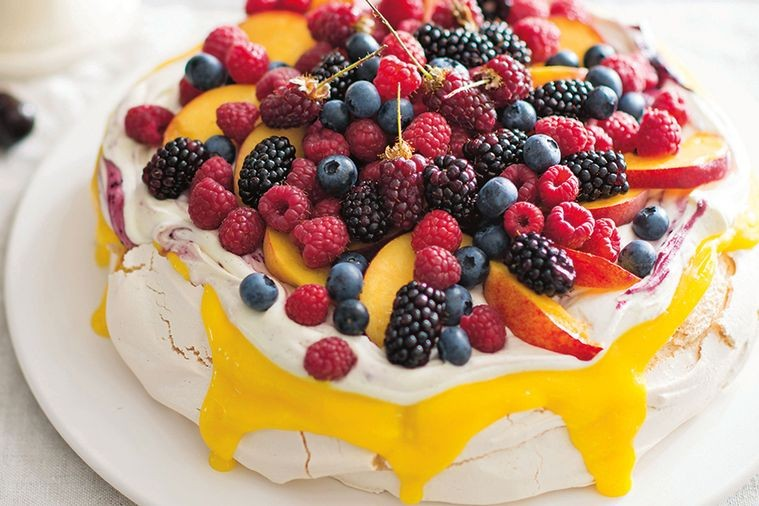

Pavlova
Pavlova is een heerlijk nagerecht met veel soorten fruit. Het is ook een makkelijk gerecht om zelf een draai aan te geven.
Ingrediënten
- 4 middelgrote eieren
- 1 citroen (schoongeboend)
- 200 g witte basterdsuiker
- 1 el maizena
- 250 g verse aardbeien
- 125 g verse frambozen
- 1 Conference peer
- 1 el poedersuiker
- 250 ml verse slagroom
Bereiding
- Verwarm de oven voor op 150 °C. Rasp de gele schil van de citroen en pers de vrucht uit. Splits de eieren. Doe de eiwitten in een schone, droge kom. De eidooiers gebruik je niet. Klop de eiwitten in de schone, droge kom stijf.
- Voeg de basterdsuiker toe en klop tot het eiwit glanst en pieken vormt. Zeef de maïzena boven de kom en voeg 1 tl citroenrasp en 3 el citroensap toe. Klop alles door elkaar.
- Zet het bakpapier met wat eiwit vast op de bakplaat dan schuift het niet. Schep de rest van het eiwit er in een cirkel van Ø 30 cm op. Bak de pavlova in de oven in ca. 1 uur gaar. Zet de oven uit en laat de pavlova nog 1 uur in de oven staan.
- Neem eruit en laat afkoelen. Verwijder de kroontjes van de aardbeien en meng de aardbeien met de frambozen. Schil en halveer de peer. Verwijder het klokhuis en snijd in dunne parten. Meng de rest van het citroensap met de poedersuiker en schenk over het fruit.
- Klop de slagroom stijf en voeg de laatste minuut de rest van het citroenrasp toe. Verdeel de room en daarna het fruit over de pavlova.

Tip Pavlova is nog lekkerder met passievrucht eroverheen.